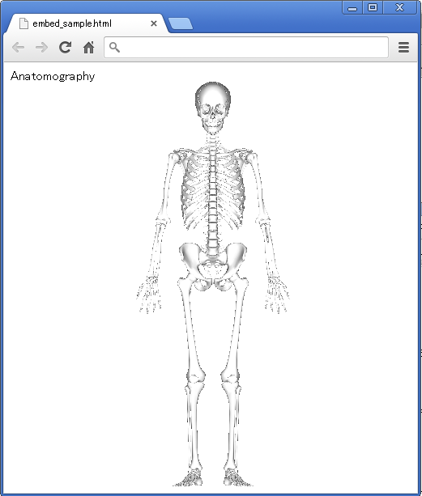

Anatomography Map API サンプルコード - html + javascript - ウェブページに埋め込む
概要Anatomography map APIを利用して作成される画像をhtmlページに埋め込み、ブラウザ上に表示します。サンプルコード空のhtmlファイルを作成し、テキストエディタで以下の内容をコピー＆ペースト、保存して下さい。
<html>
<body>
Anatomography<br />
<!-- embed anatomography image using img tag. map API URL with configuration parameter can be used directly. -->
<img src='http://lifesciencedb.jp/bp3d/API/image?{"Part":[{"PartID":"FMA5018"}]}'><br />
</body>
</html>
上記のファイルをウェブブラウザで開くと、下記のように表示されます。  応用map APIのimageメソッドをanimationメソッドに変更したhtmlを作成してウェブブラウザで表示してみて下さい。 |